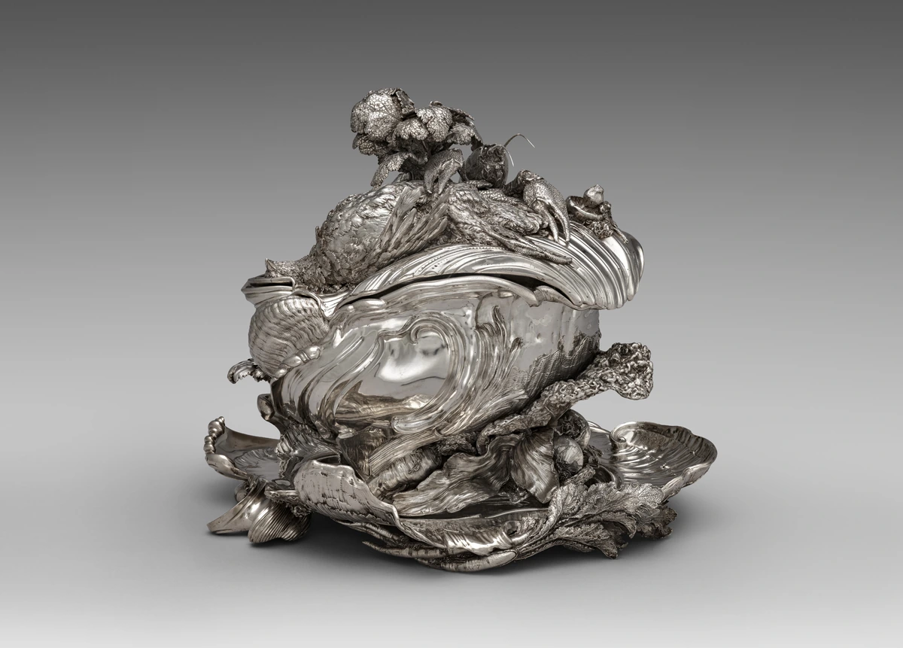

貝のうねりを、器の輪郭へ。
蓋と胴の曲線は、貝殻を思わせる巻き込みや起伏として連続しています。容器という用途を保ちながら、単純な左右対称の輪郭から離れています。
本文試作・実作品画像1点収録 / 代表画像セットは整備中 · 2026-11-01
18世紀の装飾・美術様式
Rococo
貝がらや葉のような形が、家具や器に広がります。
ロココは、18世紀に広がった飾り方の一つです。
曲がる線を使い、左右を同じ形にそろえない例が見られます。
絵だけでなく、部屋や食卓に置く物にも目を向けてみましょう。
LOOK AT THE WORK / 実作品を見る

画像を表示できませんでした。下の所蔵元リンクから作品を確認できます。
ROCOCO / SILVER · 1735-1738
Juste-Aurele Meissonnier (designer); Pierre-Francois Bonnestrenne and Henry Adnet (makers) / The Cleveland Museum of Art
CMA1977.182、1735–38年、銀。Meissonnierの設計、BonnestrenneとAdnetの制作。一対として注文されたうちの1点で、蓋・容器・台の全体を掲載しています。
蓋と胴の曲線は、貝殻を思わせる巻き込みや起伏として連続しています。容器という用途を保ちながら、単純な左右対称の輪郭から離れています。
蓋には野菜や鳥、甲殻類を思わせる造形が集まっています。館はこれらを、器から供される煮込み料理の食材と結び付けています。
磨かれた滑らかな面と細かな凹凸が、光を異なる形で反射します。淡いパステル色だけでロココを説明できない、金属工芸の例です。
形・反射・構図は取得画像の観察。館がロココの代表的な作品と明記する銀器であり、単に曲線が多いという理由だけで分類していません。
Juste-Aurele Meissonnier (designer); Pierre-Francois Bonnestrenne and Henry Adnet (makers), Covered Tureen on Stand (Pot-a-oille), 1735-1738. The Cleveland Museum of Art, Leonard C. Hanna Jr. Fund, 1977.182. CC0.
所蔵元の個別作品記録 ↗原作品：CMAの個別Public Domain判断。公開デジタル画像：個別CC0指定とOpen Access方針。確認日 2026-11-01。
公式配信の原JPEGは無加工で保持し、拡大リンクから取得できます。ページ表示には縦横比と全画面を保った縮小WebPを使用（切り抜き・色補正なし）。原JPEGと各表示画像のサイズ・SHA-256を権利台帳に別記録。撮影者名は未確認のため推定しません。
美術館のOpen Access方針 / CC0 / 収録画像の権利台帳
所蔵館の個別公開指定とCC0方針に基づきます。全法域の権利保証や美術館の推奨を意味しません。
作品の知名度や画像の入手しやすさだけで選びません。紹介したい作品と、調べて分かったことをまとめました。画像を載せられるかどうかは、別に確かめています。画像の利用許諾を確認できていないものは掲載していません。
4作品は、比べるために選んだものです。すべての地域や分野をカバーしてはいません。3–5点の画像セットが完成したという意味でもありません。
スープを入れる、台とふたの付いた器です。
自然の物や食べ物の形を、曲がる線の飾りへと変えています。
銀器・フランス、パリ
自然の物や食材の形を、器の曲線的な飾りへ変えた例です。館がロココの代表作と明記しています。
設計した人と、実際に作った職人を分けます。作者が生まれた年や亡くなった年は推測しません。
ポンパドゥール夫人の城の壁を飾った絵です。
絵一枚だけでなく、どんな部屋に置かれたかも手がかりになります。
絵画・油彩、カンヴァス
ポンパドゥール夫人のベルヴュ城の壁を飾った絵です。絵画と部屋の関係を見ることができます。
夫人を描いた肖像とは断定しません。似たヴィーナスの絵とは区別します。
ぶらんこの場面をかいた、小さな絵です。
個人のための場所で楽しむ絵として、取り上げています。
絵画・油彩、カンヴァス
私的な場で鑑賞する、洗練された小さな絵画の代表例です。
制作年を1767と断定せず、館が示す年代の幅を残します。NGAにある同じ題名の作品とは別です。
ロココの飾り方が、イギリスの品物へ広がったことを考える例です。
ほかの器や家具と比べられます。
銀器・ロンドン
イギリスの工芸へ、表現がどう広がったかを説明する比較例です。
本文の図版についた説明で作品を特定しています。細かな形を独自に分析したり、画像を採用したりする作業は、まだ行っていません。
貝殻や植物を思わせる曲線が、家具や部屋に広がります。ロココは、左右を同じ形にそろえない曲線の装飾を、家具・銀器・室内・絵画に取り入れた、18世紀の様式です。
フランスの職人やデザイナーが発展させ、イギリスでは1740–70年ごろに流行しました。移住した工芸家、装飾の図案を伝える版画、家具の見本帳が、その広がりを支えました。王侯や裕福な人々の私的な部屋・食卓と、どう結び付いていたのでしょうか。実際に注文された作品から読みます。
以下は観察のための問いです。すべての作品に共通する固定ルールや、未取得画像の実見結果ではありません。
明るく軽やかな色合いは特徴の一つですが、淡いパステルカラーだけではありません。銀器では、金属のつやも表現の一部です。
ロココ専用の書体が、一つ決まっているわけではありません。文字の形で分類するより、飾り枠や見本帳を通して図案がどう広がったかを見ます。
貝殻・岩・葉など自然の形と、C字やS字に似た曲線に注目します。それらを左右同じにそろえず、装飾に使います。
ブーシェの作品では、家具、布、花などが左右同じではない形で広がります。ただし、単にばらばらに置かれているとも、すべてが左右非対称（ひたいしょう）とも決め付けないようにします。
COMPARE
バロックの、舞台のような表現や豊かな装飾とのつながりもあります。そのうえで、自然の形や、左右をそろえない配置の使い方を比べます。新古典主義とは年代が重なり、神話や装飾を使う点も共通します。「華やかな装飾から、飾りのない形へ」という一本道ではありません。
項目を横に並べる ↗READ TODAY
現代の作品と比べるときは、曲線が見る人の視線をどう動かすか、材料によって装飾がどう変わるかを考えられます。ただし、現代のロゴやWebへの直接の影響や、専用のフォントがあることは、ここで使った史料だけでは断定できません。
このページを書くときに使った資料です。作品の説明、画像を入手できたかどうか、画像を使う条件は、それぞれ別に確かめています。検索結果で読んだ情報と、元のページを開いて確かめた情報も、調査の記録で分けています。
この項目の収録実画像：1点（一覧に登録した項目の合計：30点）。参照・関連実作品はこの項目0点（図鑑全体2点）。代表作品画像セットの数には含めません。